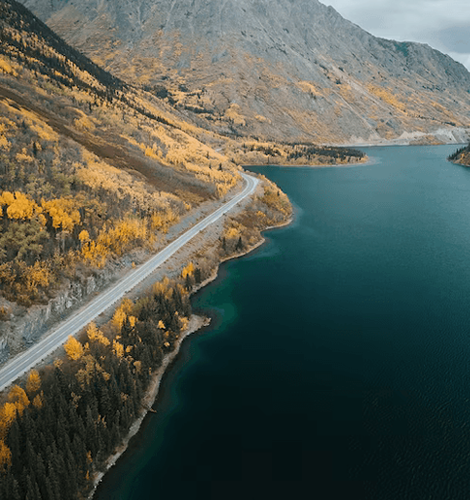
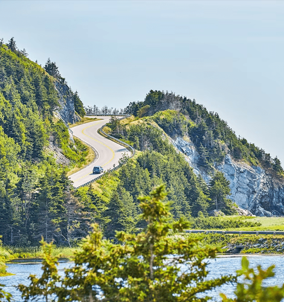
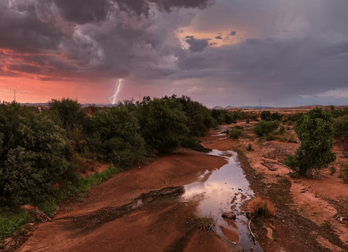
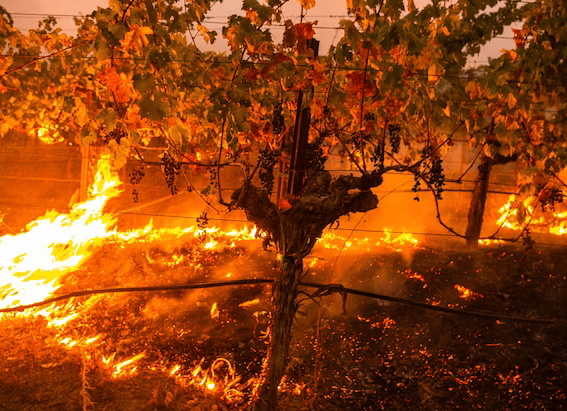
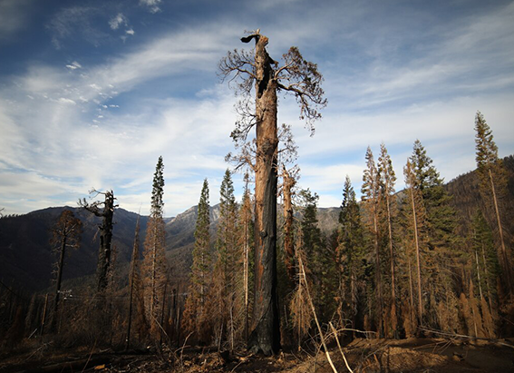

NATIONAL GEOGRAPHIC
From ice roads to the Klondike Highway 6 of Canada's most adventurous road trips
TRAVEL
- 
- 
With highways navigating remote mountains, lake shores and vast tracts of wilderness, Canada is the quintessential country for an unforgettable road trip. Whether you rent a motorhome or a car, you’ll be cruising between mountain ranges topped by glaciers, tracing the curves of coastal paths where whales puff offshore and winding through pine-scented forests.
First-timers will be at ease thanks to good signposting and (generally) very smooth tarmac, while experienced road-trippers can test their skills on routes with steep gradients and hairpin bends. In northern latitudes, not only winter packs an icy punch, so make sure you have the right tyres (book ahead for hire cars equipped with winter tyres), and check local weather updates. It’s not uncommon for some routes and amenities to be closed when the snow hits hard.
But with a bit of preparation, and plenty of snacks, you can explore some of the world’s most adventurous, remote yet accessible road trip terrain. We select six of the most spectacular routes.
1. Sea to Sky Highway, British Columbia
Stretching from Vancouver to the venerable ski town of Whistler, the 234-mile Sea to Sky Highway which forms the central section of Highway 99 is so-called because it starts by winding through the curves of Howe Sound before veering inland through the grooves of the Coast Mountains. The two-hour drive can be stretched into a long weekend easily. Try the network of trails in Cypress Provincial Park, just north of Vancouver for epic views over the city, fly high on the Sea to Sky Gondola in the adventure-capital of Squamish, grab a photo at the plummeting Brandywine Falls and finish up on Whistler’s slopes, which make for superb hiking and biking terrain outside ski season.
2. Klondike Highway, Yukon
Follow in the footsteps of the prospectors during the 1890s Klondike Gold Rush. This paved highway runs from Skagway in southern Alaska, through British Columbia into The Yukon a province almost as large as Spain. It climbs the Coast Mountains through the Chilkoot Pass, before concluding in The Yukon’s historic Dawson City. The challenging 440-mile south-north route passes alpine slopes, ice-blue lakes and old mining equipment. It takes around 10 hours to drive in one go, but make time to ride the famed White Pass and Yukon Route railway, trek the Carcross one of the world’s smallest deserts and stop at Braeburn Lodge roadhouse for its huge cinnamon buns.
3. Icefields Parkway, Alberta
One of the most scenic road trips in the world, this 144-mile ribbon of tarmac between Lake Louise and Jasper weaves through forested river valleys caught in the wolfish jaw of the jagged Canadian Rockies. Each bend unveils a scene more awe inspiring than the last. Without stops it’s a three-hour drive, but earmark the whole day. Must-sees are the receding Athabasca Glacier and Peyto Lake, a sparkling turquoise rival to Lake Louise for the title of Canada’s most spectacular body of water. For a short hike, the 2.8-mile-long Parker Ridge Trail weaves through pine forests and rewards hikers with summit views of glacial lakes.
4. Cabot Trail, Nova Scotia
Beautiful year-round, but especially spectacular in autumn when the hillsides are a blaze of amber and gold, this 186-mile loop around the northern tip of Cape Breton Island passes through Cape Breton Highlands National Park an old-growth and restored boreal forest and offers epic ocean views. Once you start, you’re committed there are no through roads to take shortcuts and it takes around five hours without stops, but we recommend taking three to five days. You’ll want to visit the former home of Scottish inventor (of telephone fame) Alexander Graham Bell and feast on lobster in Baddeck, stop off at Chéticamp, a traditional Arcadian village, hop on a whale-watching tour at Pleasant Bay to spy pilot whales, and stroll sandy Ingonish Beach. There are also 26 hiking trails inside the park.
5. Inuvik to Aklavik Ice Road
A wild card for winter travellers in search of raw adventure, this 73-mile-long stretch of road in the Northwest Territories doesn’t exist for seven months of the year. Only in winter, between late December and early April, is the water solid enough for an ice road to be ploughed across the Mackenzie Delta, from Inuvik to the hamlet of Aklavik, connecting 12 remote towns isolated north of the Arctic Circle. Expect epic views of the Richardson Mountains and, if you time it right, Inuvik’s annual Muskrat Jamboree in late April, which features snowshoe and skidoo races, dogsledding and the art of boiling tea in icy conditions.
6. Georgian Bay Coastal Route, Ontario
Take your time on this lesser-known 840-mile road trip that takes in part of Georgian Bay’s 1,243-mile-long shoreline and Ontario’s leafy heartland. Known as the sixth Great Lake, it juts off Lake Huron, and takes around two weeks to circumnavigate, passing pine forests that bristle down to the shores of pristine freshwater beaches. With no real starting point, you can begin the adventure anywhere, but be sure to include a glass-bottom boat tour of Flowerpot Island’s 19th-century shipwrecks, join a foraging tour led by an Anishinaabe First Nation guide on Manitoulin Island, stop for a photo op with Big Nickel the world’s largest coin outside Sudbury’s Dynamic Earth science museum, and take the day to tackle Killarney’s challenging ‘Crack’ mountain hike.
Comments :
- john Very good
- john Very good
Leave a Reply
Your email address will not be published. Required fields are marked*
Related posts:
-
Unlocking the secrets of the North American monsoon
Death Valley is famously the hottest and driest place in North America, recording less than two inches of rainfall a year. But earlier this month, the California desert nearly broke its single-day
View article -
How the West’s wineries are battling ruinous wildfire smoke
As dawn breaks at the Sokol Blosser Winery in Dayton, Oregon, Alex Sokol Blosser is already preparing for that day’s harvest of pinot noir wine grapes.
View article -
Polluters are using forests as ‘carbon offsets.’ Climate change has other plans.
On July 6, 2021, lightning ignited a fire in the Fremont-Winema National Forest of southern Oregon, in an area packed with dead trees from a mountain pine-beetle outbreak. Fueled by drought, the Bootleg fire exploded
View article